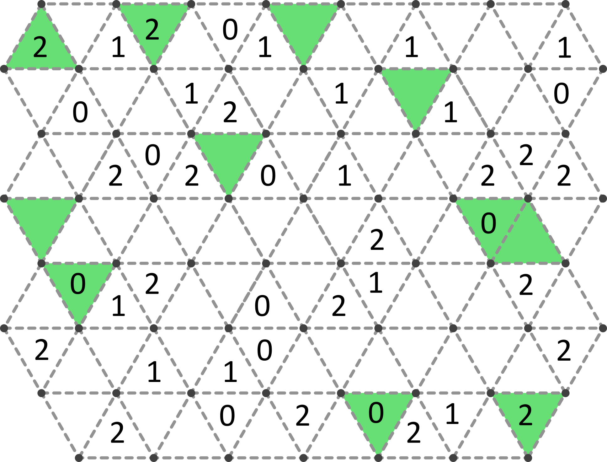
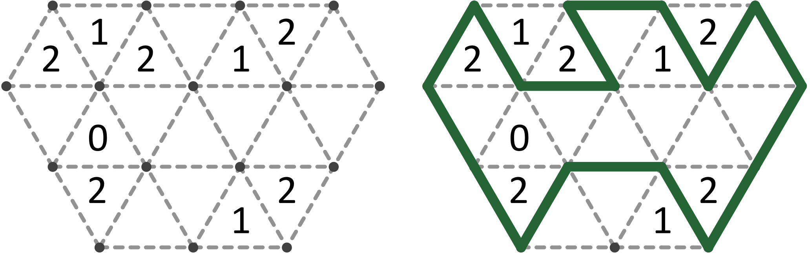

The Very Hungry Caterpillar
The caterpillar ate so much, but in the end, what did he drink?

- Curly hair in a rounded shape (4)
- Nathan ___, Dutch soccer player (3)
- French words that come before "carte" or "mode" (1, 2)
- In addition to (4)
- Change repeatedly between options (9)
- Unit of current (3)
- Pikachu's trainer (3)
- Titan who holds the heavens (5)
- Symbols in Twitter handles (3)
- Roman god of corn (5)
- A sweet piece of what the very hungry caterpillar ate on Saturday (9, 4)
- Quietly laugh to oneself (7)
- Obtain, barely (3)
- Ending for east, west, north, or south (3)
- "Forgive me father, ___ have sinned" (3, 1)
- Waste time frolicking (6)
- Department in hospital that provides intensive care (3)
- "___ the thick of it" - Backyardigans (4)
- Edible lens-shaped legumes (7)
- Test for future lawyers (4)
- Westernmost landlocked African country (4)
- Lead singer of the Rolling Stones (4)
- South American root veggie (3)
- Not online (7)
- Mabuse on Strictly Come Dancing (3)
- Slowly cooked soup (4)
- Parts of music that are sung (6)
Slitherlink guide: Using the grid edges, draw one single closed loop such that every numbered triangle has exactly that many of its edges included in the loop. An example puzzle and solution is shown below.
